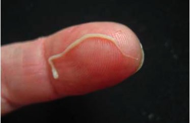
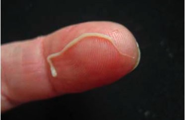

Warzen sind das Ergebnis der Anwesenheit von Parasiten in Ihrem Körper!
Wenn Sie Warzen am Hals, an der Achse und anderswo haben, bedeutet das, dass die Parasiten Sie von innen her auffressen!
Wenn sich Warzen auf dem menschlichen Körper befinden, dann hat sich bereits eine Kolonie tödlicher Parasiten in den inneren Organen angesiedelt und frisst das Gewebe auf.
Laut Statistik leiden mehr als eine Milliarde Menschen an parasitären Infektionen. Der genaueste Weg, diese Infektion zu diagnostizieren, ist das Auftreten von Warzen.
Heute beantwortet Peter Ulke unsere Fragen.
Doktor der Medizinischen Wissenschaften, Abteilung Parasitologie, Doktor der Ästhetischen Medizin. Er leitet die Sendung Ungewöhnliche medizinische Fälle auf TVN Style und ist Autor von zwei Büchern über das Institut für Medizinische Parasitologie und Helmintologie und hat die wahre Ursache für das Auftreten von Warzen am menschlichen Körper kennen gelernt: die Parasiteninfektion. Jüngste Studien haben gezeigt, dass Restprodukte von Parasiten giftig sind und eine ideale Umgebung für die Entwicklung von Bakterien schaffen. Aus diesem Grund können Menschen, die mit Parasiten infiziert sind, feststellen, dass Warzen auf ihrer Haut erscheinen.
Heute werden wir dieses medizinische Thema mit Hans Pfeil diskutieren über ästhetische Medizin.
Reporter: Hans, hallo! Ich beginne mit der Hauptfrage: Stimmt es, dass der größte Teil der deutschen Bevölkerung mit Parasiten infiziert ist?
Hans: Leider ja. Wir nehmen einen der ersten Plätze bei den Parasiteninfektionen ein. Dies ist auf die sehr schlechten Umweltbedingungen, die Untätigkeit der Behörden und die Gleichgültigkeit gegenüber den Menschen zurückzuführen.
Millionen von Menschen sterben jedes Jahr an Krankheiten, die durch Parasiten verursacht werden. Gleichzeitig steht auf den Totenscheinen nirgendwo geschrieben, dass eine Person an einer Parasiteninfektion gestorben ist. Es gibt nur sehr wenige Ausnahmen, und in der Regel handelt es sich um Situationen, in denen es unmöglich ist, die Infektion zu ignorieren, zum Beispiel, wenn das Herz mit Parasiten verstopft ist. Es ist für die lokalen Gesundheitsbehörden völlig unprofitabel, zuzugeben, dass das Ausmaß einer solchen Infektion recht hoch ist und dass 89% aller Todesfälle durch Parasiten verursacht werden. Außerdem führen all diese Krankheiten dazu, dass die Menschen wegen teurer Medikamente in Kliniken gehen. Dies ist ein riesiger Markt. Ich hoffe, Sie können genau verstehen, was ich meine.
Reporter: Hans, sind Warzen wirklich ein Zeichen für eine Parasiteninfektion?
Hans: Ja, eine Reihe von Studien bestätigen, dass parasitäre Abfallprodukte zum Auftreten von Warzen auf der menschlichen Haut führen. Wenn Sie außerdem Warzen auf Ihrer Haut bemerken, bedeutet dies, dass sich die Parasiten bereits in Ihrem Körper angesiedelt haben und aktiv Eier legen. Daher ist jeder, der Warzen auf der Haut hat, in Lebensgefahr.
Und ich erinnere Sie daran, dass etwa 89% aller Todesfälle, auch aus so genannten natürlichen Ursachen, durch einen einzigen Faktor verursacht werden - durch Parasiten, die uns langsam von innen her auffressen.
Korrespondent: Also sind gewöhnliche Würmer die Ursache für das Auftreten von Warzen auf der Haut? Wie können sie den Tod verursachen?
Hans: Eigentlich ist es ein Irrtum zu glauben, dass Parasiten nur Würmer sind. Es gibt eine Vielzahl von Parasitenarten, die in verschiedenen Organen leben und unterschiedlichste Folgen haben können. Darüber hinaus sind Würmer oder, wie man sie auch nennt, Helminthen, recht gefährlich. Sie zerstören buchstäblich den Darm, was zur Zersetzung und dann zum Tod führt. Übrigens sind Würmer schwer zu entdecken und ebenso schwer zu entkommen.
Neben Würmern gibt es Tausende von Parasiten, die in der Leber, im Gehirn, in der Lunge, im Blut und im Magen leben können. Und fast alle von ihnen sind tödlich. Einige von ihnen beginnen sofort damit, den menschlichen Körper aggressiv zu zerstören. Andere Parasiten leben im Verborgenen, bis ihre Zahl so gross wird, dass der Körper nicht mehr in der Lage ist, mit ihnen fertig zu werden, und die Person stirbt. Sie verursachen eine Reihe von tödlichen Komplikationen: Herzinfarkt, Krebs, Zirrhose, Nephritis, Nierenfäule.
Gleichzeitig kann ich mit Zuversicht sagen, dass fast alle Menschen mit Parasiten infiziert sind. Das Problem ist, dass die meisten Parasiteninfektionen sehr schwer zu erkennen sind. Und wenn die Auswirkungen einer Parasiteninfektion sichtbar werden, versuchen die Ärzte, sie loszuwerden. Auch bei einer Autopsie ist ein spezieller Test zum Nachweis der Parasiten erforderlich. Zumindest in den meisten Fällen.
Das einzige universelle Symptom, das das Vorhandensein von Parasiten im menschlichen Körper genau diagnostizieren kann, sind Warzen.
Reporter: Können Sie einige konkrete Beispiele für Parasiteninfektionen nennen?
Hans: Ich kann Ihnen Tausende von Fällen nennen. Aber vielleicht konzentriere ich mich auf diejenigen, die die Gefahr einer Infektion mit Parasiten am besten zeigen.
1. Ein Fall mit einem guten Ergebnis. Der Patient klagte von Zeit zu Zeit über Bauchschmerzen. Die Untersuchung zeigte, dass seine Eingeweide voller Würmer waren. Man grub dort buchstäblich ein Labyrinth aus, der Prozess der Gewebedegeneration begann, und der Patient stand am Rande der Asepsis. Während der Operation wurde ein Teil des Darms entfernt, die Würmer wurden zusammen mit dem sich zersetzenden Gewebe entfernt. Nach einer Woche Intensivpflege fühlte sich der Patient viel besser.
2. Uterus infiziert mit einer Kolonie von Parasiten. Leider war es bereits unmöglich, sie loszuwerden, denn die Parasiten und ihre Larven füllten die Gebärmutter dieser Patientin vollständig aus und vergrößerten die Gebärmutter um ein Vielfaches. Deshalb mussten sie eliminiert werden. Die Frau wurde gerettet. Die Vergiftung des Körpers war jedoch so stark, dass sie sich nach der Entfernung der Gebärmutter einer Spezialbehandlung unterziehen musste und leider nach 3 Jahren verstarb.
3. Echinokokkose des Herzens. Die Krankheit wurde zu spät entdeckt. Der behandelnde Arzt glaubte, dass dieser Patient einfach nur an koronarer Herzkrankheit und Angina pectoris litt, aber die Realität erwies sich als grausamer. Die Operation half nicht, und auch nicht die konservative Behandlung. Keine Herztransplantation funktionierte - sie schlug keine Wurzeln. Infolgedessen starb der Patient, ohne das Bewusstsein wiederzuerlangen.
Reporter: Wie können wir überprüfen, ob wir mit Parasiten infiziert sind?
Hans: Leider gibt es keine Methoden, die sicher diagnostizieren können, ob Parasiten im menschlichen Körper vorhanden sind oder nicht. Das liegt zum Teil daran, dass es viele Arten von Parasiten gibt, mehr als 2000 bekannte Arten, und zum Teil daran, dass sie schwer zu entdecken sind. Eine vollständige Untersuchung auf ihr Vorhandensein kann nur in mehreren Kliniken in Deutschland durchgeführt werden, ist aber sehr teuer.
Die Hauptsymptome, die auf das Vorhandensein von Parasiten im Körper hinweisen, sind
- - Warzen;
- - rschlechter Atem;
- - Allergien (Hautausschläge, feuchte Augen und laufende Nase);
- - Hautausschläge und Rötungen auf der Haut;
- - häufige Erkältungen;
- - chronische Müdigkeit;
- - häufige Kopfschmerzen;
- - Verstopfung oder Durchfall;
- - Muskel- und Gelenkschmerzen;
- - nervöse Störungen, Schlaflosigkeit und Appetitstörungen;
- - dunkle Tränensäcke unter den Augen.
Wenn mindestens eines dieser Symptome auftritt, dann liegt die Wahrscheinlichkeit, dass Ihr Körper Parasiten hat, bei 99%. Und Sie sollten sie so schnell wie möglich loswerden!
Reporter: Wie können wir uns schützen und Parasiten loswerden?
Hans: Wenn es um die Verfügbarkeit von Medikamenten zur Parasitenbekämpfung geht, ist die aktuelle Situation recht problematisch. Natürlich gibt es hoch spezialisierte Medikamente, die den Körper von Würmern reinigen. Es gibt auch mehr oder weniger wirksame Medikamente gegen bestimmte Arten von Würmern oder Parasiten, die die Leber angreifen. Das Hauptproblem besteht jedoch darin, dass sie nur mit einem bestimmten Parasitentyp interagieren und jeder Mensch Träger von mindestens 7-8 Parasitentypen ist.
Heute gibt es nur eine Lösung, die es Ihnen erlaubt, die Parasiten vollständig loszuwerden. Es ist ein antiparasitäres Ergänzungsmittel namens Germixil. Klinische Studien haben hervorragende Ergebnisse gezeigt. Der Export dieses Produkts wurde ausgesetzt, bis es in ganz Deutschland vertrieben wird.
Reporter: Was macht Germixil so besonders? Was ist der Unterschied zwischen diesem Medikament und anderen antiparasitären Medikamenten?
Hans: Im Vergleich zu anderen antiparasitären Medikamenten wirkt es direkt auf eine Vielzahl von Parasiten, die den ganzen Körper infizieren können. Angesichts der Probleme bei der Diagnose ist es erwähnenswert, dass man mit diesem Mittel den gesamten Körper effektiv reinigen kann. Und Germixil vernichtet und entfernt alle Parasiten, die in irgendeinem inneren Organ leben - vom Gehirn und Herz bis hin zu Leber und Darm. Derzeit ist kein anderes Medikament dazu in der Lage.
Zudem handelt es sich nicht um einen chemischen Wirkstoff, sondern um ein vollkommen natürliches Produkt, das das Risiko der Entwicklung allergischer Reaktionen, Störungen der bakteriellen Darmflora und anderer Probleme, die bei der Verwendung klassischer Tabletten auftreten können, eliminiert. Deshalb wird es von internationalen Apothekenketten und Pharmaunternehmen so stark nachgefragt.
Wichtig! Der Hersteller hat eine Sonderaktion gestartet, in der dieses Präparat mit 50% Rabatt gekauft werden kann!
Dies ist ein begrenztes Angebot. Das Original Germixil kann auf der OFFIZIELLEN SEITE MIT EINEM 50%-RABATT BESTELLT WERDEN.
Dies ist ein begrenztes Angebot. Das Original Germixil kann auf der OFFIZIELLEN SEITE MIT EINEM 50%-RABATT BESTELLT WERDEN.
1. Die Wirksamkeit von Germixil wurde mit Standardtechniken berechnet. Das Verhältnis der vollständig genesenen Personen zu der Gesamtzahl der Personen in einer Gruppe von 100 Personen, die dieses Mittel eingenommen haben:
2. Es wurden keine Nebenwirkungen, einschließlich allergischer Reaktionen, festgestellt.
3. Germixil wurde als das wirksamste Medikament zur Kontrolle von Parasiten anerkannt.
Das Präparat ist nicht nur in Deutschland, sondern auch an der Universität für Parasitologie in Paris zertifiziert. Klinische Studien haben die in Deutschland gewonnenen Daten vollständig bestätigt. Die Franzosen erhielten einen noch höheren Prozentsatz geheilter Patienten.
Eine Reihe von klinischen Studien in China, Japan und Vietnam sind fast abgeschlossen. Asiatische Länder haben ein großes Interesse an diesem Medikament. Ausnahmslos alle Tests haben die unglaubliche Wirksamkeit dieses Medikaments gezeigt.
Reporter: Ich denke, unsere Leser würden gerne wissen, wo sie Germixil mit Rabatt kaufen können?
Hans: Dies ist ein begrenztes Angebot. Und das Produkt selbst ist nur in bestimmten Regionen des Landes erhältlich. Wie oben erwähnt, ist Germixil derzeit mit einem Rabatt von 50% erhältlich.
Alles, was Sie tun müssen, um Germixil zu kaufen, ist eine Anfrage auf der Website zu hinterlassen, den Namen und die Telefonnummer anzugeben, unter der der Betreiber Sie kontaktieren kann. Wenn Sie immer noch sehen, dass Sie eine Feedback-Anfrage senden können, bedeutet dies, dass das Produkt noch auf Lager ist. Ich garantiere persönlich, dass jeder, der eine Anfrage an die Website sendet, die Bestellung erhält.
Reporter: Hans, möchten Sie unseren Lesern etwas sagen, bevor wir dieses Interview beenden?
Hans: Das Einzige, was ich sagen möchte, ist, sich um ihre Gesundheit zu kümmern. Sie dürfen nicht einmal vermuten, dass die Parasiten in Ihnen leben. Sie können überall sein - im Blut, im Darm, in der Lunge, im Herz, im Gehirn. Die Parasiten fressen Sie von innen her auf und vergiften Ihren Körper. Infolgedessen gibt es zahlreiche Probleme, die die Lebenserwartung um 15-25 Jahre verringern. Ich werde nicht einmal den plötzlichen Tod erwähnen, der normalerweise als Folge der Aktionen der Parasiten im Körper auftritt. Warten Sie nicht, bis es zu spät ist. Reinigen Sie Ihren Körper jetzt.
Wichtig! Es stellt sich heraus, dass jetzt der beste Zeitpunkt ist, mit der Behandlung zu beginnen. Die Wirkung des Medikaments wird verbessert. Die Verbesserung der Gesundheit tritt 47% schneller ein als zu anderen Zeiten des Jahres.
Ich habe dieses Produkt bereits ausprobiert. Ich hatte eine Menge Warzen am Hals und an der Achselhöhle. Fünf Tage später, nachdem ich das Medikament eingenommen hatte, sah ich, dass sie immer weniger wurden. Mein Magen begann sich zu bessern.
Ich habe auch Germixil bestellt. Der Kurier lieferte am nächsten Tag. Ich hatte eine Menge Warzen an meiner Brust. Ich fing an, Germixil einzunehmen, und Sie haben keine Ahnung, was aus mir herauskam. Ich hätte nie gedacht, dass so viele Kreaturen in meinem Bauch leben können. Ich will mich nicht mehr daran erinnern.
Stellen Sie sich vor, wir hätten Würmer im Töpfchen des Babys gefunden. Ich hatte schreckliche Angst. Mein Freund hatte kürzlich ein ähnliches Problem und riet mir, Germixil einzunehmen. Ich bestellte sofort auf der offiziellen Website. Viele tote Würmer sind aus meinem Baby herausgekommen! Nach der Behandlung gingen wir zum Arzt, und er bestätigte, dass es Darmwürmer waren. Germixil wirkt Wunder. So gut, dass mein Sohn nicht einmal wusste, dass er ein solches Problem hatte. Das habe ich im Töpfchen meines Sohnes gesehen.


Ich danke Ihnen vielmals! Als ich anfing, Germixil einzunehmen, hatte ich keine Ahnung, dass es eine solche Wirkung erzielen könnte. Die Bauchschmerzen sind bereits vorbei. Ich dachte, dass etwas in mir lebt. Und mit dem Schmerz verschwanden auch die Warzen. Und jetzt, mit 53, fühle ich mich gesünder als mit 30. Danke, dass Sie den Menschen von diesem Problem erzählt haben. Ihr Hausarzt wird Ihnen solche wichtigen Informationen sicher nicht weitergeben.
Adelbert, danke für das positive Feedback.
Mit freundlichem Grüßen, Arno
Mit freundlichem Grüßen, Arno
Ich habe Germixil bereits ausprobiert. Die Wirkung ist einfach erstaunlich. Ich fühle mich jung und gesund. Acht Monate nach der Behandlung mit diesem Medikament ist mein Immunsystem viel stärker geworden. Seitdem hat mich nichts mehr beunruhigt! Von solchen Ergebnissen konnte ich nur träumen. Weiterempfehlen!

Vor kurzem habe ich einen Dokumentarfilm über Parasiten gesehen. Und dieses Medikament wurde dort erwähnt. Sie sagten, dies sei das beste Antiparasitenmittel der Welt.
Ich habe gerade eine Bestellung aufgegeben. Das Paket sollte in einer Woche eintreffen. Ich kann es kaum erwarten!
Ich hatte albtraumhafte Migräne und Warzen. Ich nahm Germixil für ein paar Wochen ein, und meine Probleme verschwanden. Jetzt kann ich nicht aufhören, darüber nachzudenken, was ich damals durchgemacht habe?
Meine Großmutter brachte mir bei, wie man Parasiten mit Wermut loswird. Meine ganze Familie trinkt einen Aufguss und, wissen Sie, es funktioniert! Würmer kommen buchstäblich aus Kindern heraus. Aber... bei Warzen hilft das nicht. Ich habe Germixil bestellt und ich habe keine Warzenprobleme mehr! Wir haben mit dem Trinken von Wermut aufgehört und sind zu Germixil übergegangen. Die Wirkung ist die gleiche, der Preis ist sehr erschwinglich und viel einfacher zu verabreichen. Und jetzt ist es mit Rabatt erhältlich.
Sehr interessantes Interview, vielen Dank! Öffnen Sie den Leuten die Augen!

Und wenn es ein Scherz ist? Warum wird es nur über das Internet verkauft?
Ich stimme mit allen Kommentaren überein. Als ich anfing, Germixil einzunehmen, krochen eklige Würmer aus mir heraus. Ich geriet in Panik und flog zum Arzt. Er sah mich an und sagte, dass dies alles Leberprobleme seien. Und wenn Germixil nicht gewesen wäre, hätten sie mich in zwei oder drei Jahren getötet.

Julia, haben Sie diesen Artikel gelesen? Über welche Art von Betrug können wir sprechen, wenn Sie bei der Lieferung dafür bezahlen? Bestellt, per Kurier geliefert. Ich habe alles überprüft und dann bezahlt. Jetzt wird alles über das Internet verkauft, von Kleidung und Schuhen bis hin zu verschiedenen Geräten und Möbeln.
Rezensionen